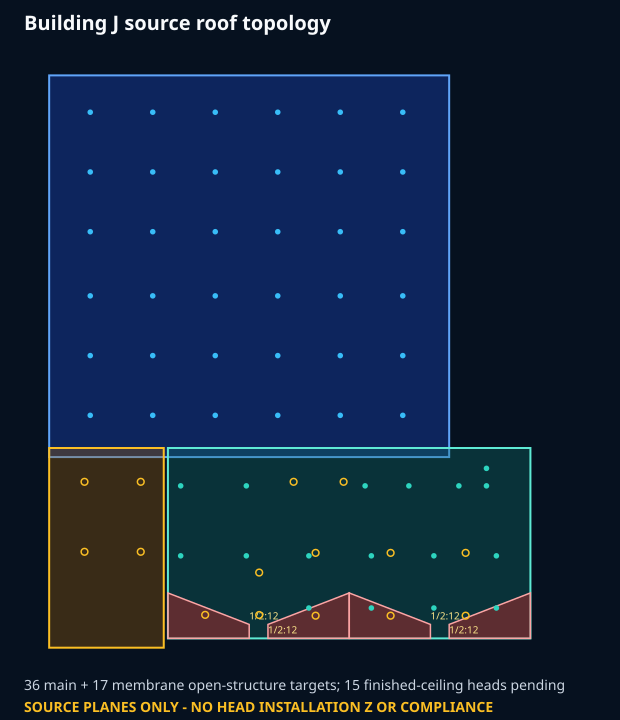
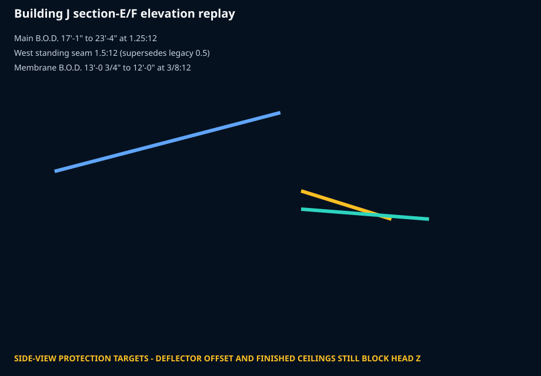
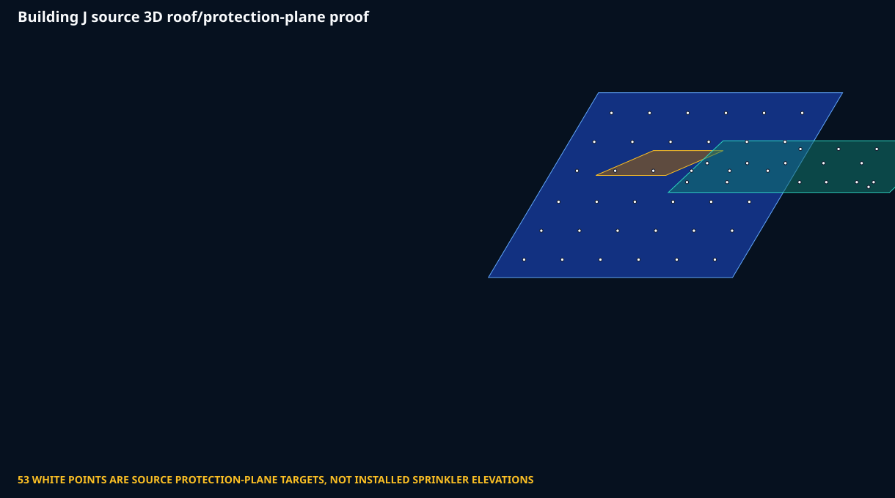

PDF roof topology

Side-view elevation replay

3D source protection planes

Protected PDF vectors + section E/F DWGs. 53 source protection-plane targets; no installed head Z or compliance claim.


